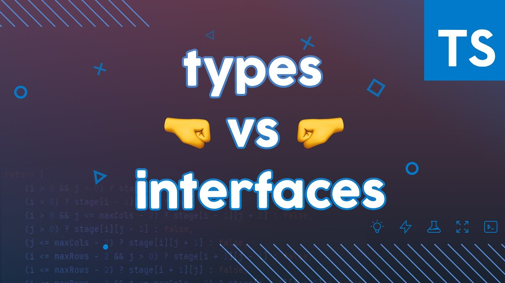

TypeScript
What is it? Why should we use it?
What is it?
TypeScript is JavaScript with syntax for types
TypeScript is a strongly typed programming language that builds on JavaScript, giving you better tooling at any scale
Why use better TypeScript instead of JavaScript?
1. Adds static typing to JavaScript to let use auto completion
2. Simplifies JavaScript code, making it easier to read and debug
3. Let to catch errors and issues
4. Improves collaboration
Static Type Checker
TypeScript checks a program for errors before execution, and does so based on the kinds of values, making it a static type checker
const obj = { width: 10, height: 15 };
const area = obj.width * obj.heigth;
/*Property 'heigth' does not exist on type
'{ width: number; height: number; }'.
Did you mean 'height'?*/
Is everything perfect?
No, there are some cons:
1. Not true static typing - it's optional
2. Need to cover all code with types for correct works
3. Adds extra time to development and building
Data types

Primitives
They represent values:
- string
- number
- boolean
- null
- undefined
Reference types
They represent references to values:
- object
- array
Special types
- any represents any value
- enum represents set of named constants
- void represents absence of a specific type
- unknown represents that any operations will never be performed
- never represents safe any type
Type declarations
They can be specified when declaring variables or TypeScript will know (infer) a type automatically
//PRIMITIVES
const age: number = 32; //or
const age = 32;
const name: string = 'Alice';
const loggedIn: boolean = true;
const user: null = null;
const value: undefined = undefined;
//REFERENCE TYPES
const names: string[] = [];
const todo: { id: number } = { id: 1 };
//SPECIAL TYPES
const input: any = 5; //or
const input: any = 'string';
enum Keys { Top, Left };
function test(): void {}
const data: unknown = {};
function error(): never { throw Error(); }
Type alias and interfaces
What are type alias?
Type Aliases allow defining types with a custom name (key word - type)
type CarYear = number;
type CarModel = string;
type Car = {
year: CarYear;
model: CarModel;
};
const car: Car = {
year: 2001,
model: 'BMW'
};
Union Types
Union types are more complex type Aliases and used when a value can be more than a single type.
type DataValue = string | number; //OR
type Id = { id: string };
type Auth = { isLogined: boolean };
type User = Id & Auth; //AND
Type assertions
Type assertions enable treating an existing object as a specific type
Utility Types
TypeScript has a large number of types that can help with some common type manipulation, referred to as utility types
Interfaces
Interfaces are similar to type aliases, except they only apply to object types and can extend each other
interface Figure {
name: string;
}
interface Rectangle extends Figure {
height: number,
width: number
}
const rectangle: Rectangle = {
name: 'rect',
height: 20,
width: 10
};
Function in TypeScript
Function signatures
TypeScript has a specific syntax for typing function parameters and return values.
function multiply(a: number, b: number): number {
return a * b;
}
//or
const multiply = (a: number, b: number): number => {
return a * b;
}
Function types
Function types can be specified separately from functions with type aliases. Also we can use default parameters
type Increaser = (value: number, plus?: number) => number;
const increaseFunction: Increaser = (value, plus = 0) => value + plus;
Generics
Generics allow creating 'type variables' that don't need to explicitly define the types that they use
Generics makes it easier to write reusable code
OOP in TypeScript
Encapsulation
TypeScript adds types and visibility modifiers to JavaScript classes
//members of a class (properties & methods) are typed
//using type annotations
class Person {
name: string;
}
const person = new Person();
//Class members also be given special modifiers
//which affect visibility:
//private, protected, public and readonly keyword,
//which can prevent class members from being changed.
class Person {
public constructor(private readonly name: string) {}
protected getName(): string {
return this.name;
}
}
const person = new Person("Jane");
Inheritance
Interfaces can be used to define the type a class must follow through the implements keyword. Classes can extend each other through the extends keyword
//Inheritance: Implements
interface Shape {
getArea: () => number;
}
class Rectangle implements Shape {
public constructor(
protected readonly width: number,
protected readonly height: number,
) {}
public getArea(): number {
return this.width * this.height;
}
}
//Inheritance: Extends
class Square extends Rectangle {
public constructor(width: number) {
super(width, width);
}
// getArea gets inherited from Rectangle
}
Polymorphism
When a class extends another class, it can replace the members of the parent class with the same name, but we can override this
class Square extends Object {
public constructor(private readonly width: number) {
super();
}
// this toString replaces the toString from Rectangle,
// but override keyword is optional
public override toString(): string {
return `Square[width=${this.width}]`;
}
}
Static and abstract class
TypeScript support static properties that are shared by all instances of the class and abstract modifier that means class cannot be directly instantiated
abstract class Shape {
constructor(
private readonly width: number,
private readonly height: number
) {}
getArea() {
return this.width * this.height;
}
}
//cannot be instantiated
const shape = new Shape();
class Square extends Shape {
static counter: number = 0;
public constructor(size: number) {
super(size, size);
}
}
//can be instantiated
const square = new Square(5);
square.getArea();
//static counter is available without instantiation
Square.counter;